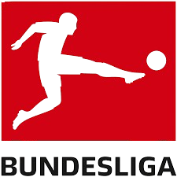
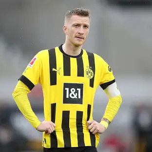
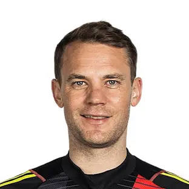
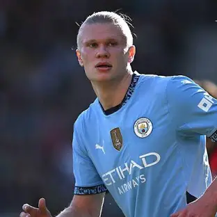

Bundesliga este prima ligă de fotbal profesionist din Germania și una dintre cele mai puternice competiții din Europa. A fost fondată în anul 1963 și de atunci a devenit casa unor echipe celebre și a unor jucători legendari. Se desfășoară anual și include 18 echipe care concurează pentru titlul de campioană a Germaniei. Bayern München este cel mai de succes club din istoria competiției, cu numeroase titluri câștigate.
Bundesliga este recunoscută pentru stilul său ofensiv de joc, pentru stadioanele mereu pline și pentru dezvoltarea tinerelor talente. În plus, este una dintre ligile cu cele mai bune structuri financiare și organizatorice din lume.
Jucători celebri din Bundesliga

Robert Lewandowski
Bayern München(acum FC Barcelona)
Atacant de top, golgheter al ligii timp de ani la rând.

Marco Reus
Borussia Dortmund
Cunoscut pentru dribling, viziune și loialitate față de club.

Manuel Neuer
Bayern München
Portar legendar, cunoscut ca „sweeper keeper”.

Erling Haaland
Borussia Dortmund(acum Man City)
A impresionat cu forța, vitezăa și instinctul lui de marcator.